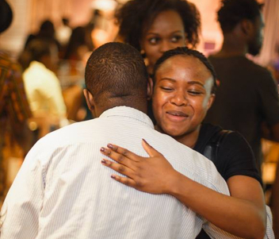
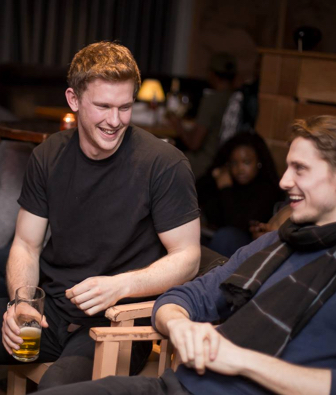

Relationships are born beyond the stage
{% include icons/dots.html %}
{% include icons/dots.html %}



Creates an environment that people of different backgrounds and walks of life come together with a common purpose and provides the perfect platform for people to network with others with similar passions.